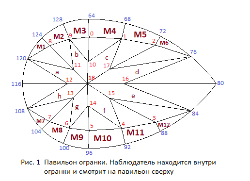
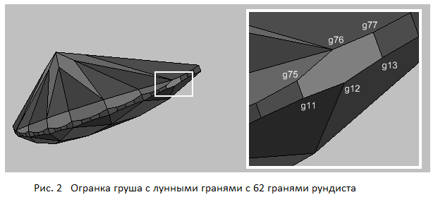

В данном разделе мы создадим модель груши с лунными гранями.
На рисунке 1 приведена нумерация вершин павильона груши с лунными гранями. Корона огранки и нумерация ее вершин совпадает с короной огранки груша без лунных граней.

var lw = 1.5; // Отношение длины огранки к ее ширине
// Форма и толщиа рундиста
var r = 0.04; // Толщина рундиста
var vp = 0.0; // Угол, определяющий величину отклонения кривой от окружности
var Lh = 0.34; // отклонение смещения самого широкого места рундиста
var square_deviation = 0; // степень отклонения рундиста от эллипса
// Корона
var beta = 35*DEGREE; // Угол короны
var t = 0.6; // Ширина площадки
var dSquare = 0.0; // Задает положение средних вершин короны.
var vLh = 0.00001; // определяет смещение центральной точки огранки
// Павильон
var hp = 0.44; // Задает глубину павильона
var hPavFacet = 0.8; // Определяет положение нижних вершин клиньев павильона
var CuletX = 0.0001; // смещение калетты вдоль оси X
var MoonFacetAngle = 64*DEGREE; // угол наклона лунных граней
var MoonRotateAngle = 17*DEGREE; // угол наклона плоскости пересекающей лунные грани
// Следующие параметры задают положение узловых вершин на рундисте
var DelAngGirdle_4 = 0; // вершины рундиста 44, 52, 108, 116
var DelAngGirdle_8 = 0.0*DEGREE; // вершины рундиста 40, 56, 104, 120
var DelAngGirdle_12 = 0.0*DEGREE; // вершины рундиста 36, 60, 100, 124
var DelAngGd_16 = -2.0*DEGREE; // вершины рундиста 0, 32, 64, 96
var DelAngGirdle_20 = 0.0*DEGREE; // вершины рундиста 4, 28, 68, 92
var DelAngGirdle_24 = 0.0*DEGREE; // вершины рундиста 8, 24, 72, 88
var DelAngGirdle_28 = 0.0*DEGREE; // вершины рундиста 12, 20, 76, 84
Расчет положения вершин рундиста рассматривался ранее. Но, после того как он был расчитан, мы развернули его в горизонтальной плоскости таким образом, чтобы основной диаметр рундиста был направлен вдоль оси OY (разворот на 90°). Таким образом, например, вершина рундиста 16 из предыдущей главы превратилась в вершину рундиста с номером 0. Построение короны совпадает с построением короны огранки груша без лунных граней. Рассмотрим построение павильона.
У огранок типа груша, также как и у огранок типа маркиз, может присутствовать примыкающий к рундисту пояс лунных граней (moon facets). Также как и огранки маркиз, огранки груша могут иметь различное число главных четырехугольных граней павильона. На рисунке 1 показан вариант огранки груша с лунными гранями, которая имеет восемь основных граней павильона.
Лунные грани огранки построены тем же способом, каким построены лунные грани огранки маркиз. Отличие заключается только в том, что в качестве оси вращения плоскости planePitch выбирается прямая соединяющая вершины рундиста 76 и 116. Однако построить основные четырехугольные грани павильона таким же образом, как они были построены в огранке маркиз, не удастся. Рассмотрим построение граней a, b, c и d павильона. Будем считать, что лунные грани уже созданы. Как можно увидеть из рисунка 1 огранка, которая должна быть построена, имеет WBT-расположение граней павильона.
Прежде всего, находим координаты калетты огранки. Глубина калетты задается при помощи поля hp из СДМ.
В огранке груша с лунными гранями калетту, в отличие от огранки без лунных граней, можно двигать только вдоль оси OX.
Смещение калетты задается при помощи двух параметров.
Параметр vLh сдвигает одновременно и калетту и точку, в которой сходятся плоскости главных граней короны.
Следует заметить, что при изменении этого параметра положение лунных граней огранки остается неизменным.
Параметр CuletX позволяет двигать вдоль оси OX только калетту – положение граней короны и лунных граней
павильона остается неизменным. Координаты калетты по оси OY определяются при этом суммой
значений задаваемых параметрами vLh и CuletX.
Для нахождения уравнения плоскости, в которой лежит грань d, поступим следующим образом. Из рисунка 1 видно, что эта плоскость проходит через вершину 76 и калетту огранки. Координаты этих двух вершин известны. Чтобы найти уравнение плоскости требуется определить координаты еще одной точки, принадлежащей этой плоскости или каким-то образом задать азимут грани d. Можно, конечно явно задать азимут, введя его значение в качестве параметра огранки. Но в этом случае при изменении удлинения огранки азимут грани будет оставаться постоянным, а желательно, чтобы он менялся в соответствии с изменением удлинения огранки. Поэтому требуется найти возможность связать азимут грани d с изменением формы рундиста огранки. Так как каждой точке линии рундиста можно поставить в соответствие касательную к этой линии, то естественно взять для азимута грани d касательную в некоторой точке рундиста. Вместо касательной к рундисту для задания азимута грани подойдет и прямая проходящая через соседние или недалеко друг от друга расположенные две вершины рундиста. Вопрос заключается только в выборе точек на рундисте, через которые следует провести секущие прямые. Сразу напрашивается вариант проведения секущей прямой через вершины 75 и 77. Проведенная через эти вершины секущая прямая фактически будет определять направление касательной к рундисту в его вершине 76. Однако если построить огранку с таким выбором касательной и, следовательно, с соответствующим азимутом грани d, то результат получится не очень хороший – павильон огранки теряет выпуклость.
Методом подбора было выяснено, что удовлетворительный результат получается, если провести секущую прямую через вершины 77 и 78 рундиста. В этом случае вектор, совпадающий по направлению с этой прямой, задаст азимут грани d. Вершина 12 павильона принадлежит одновременно трем плоскостям – плоскости симметрии огранки OXZ, горизонтальной плоскости planePavFacets, определяющей глубину нижних вершин клиньев павильона и плоскости, в которой расположена грань d. Поэтому найдем положение вершины 12 павильона как точку пересечения этих трех плоскостей.
Перейдем к нахождению координат вершины 11 павильона. Сделаем следующее допущение – будем считать, что эта вершина лежит на вертикальной плоскости, проходящей через калетту огранки, и вершину 72 рундиста, координаты которой были определены в процессе построения пояса лунных граней огранки. Тогда положение вершины 11 павильона находится как точка пересечения трех плоскостей – плоскости грани d, плоскости planePavFacets и только что упомянутой вертикальной плоскости. Теперь, вычислив координаты вершины 11 павильона, можно записать уравнение плоскости грани c.
Таким образом, мы вычислили положение вершин 11 и 12 павильона, и нашли уравнения его плоскостей, в которых лежат грани c и d. Координаты вершин 16 и 17 павильона определяются похожим способом. Азимут грани a задает секущая прямая проходящая через вершины рундиста 114 и 118. Вершина 17 павильона лежит на вертикальной плоскости, проходящей через калетту огранки, и вершину 120 рундиста. На последнем этапе построения находим координаты вершины 10 павильона, как точку пересечения плоскостей, в которых лежат грани b и c, а также плоскости planePavFacets.
Приведенный вариант построения граней a, b, c и d павильона не является единственно возможным. Например, можно определить азимуты граней b и c также как и граней a и d – с помощью проведения секущих прямых через выбранные вершины рундиста и затем использовать направляющие векторы этих прямых для нахождения уравнений плоскостей, в которых лежат грани. В этом случае положение вершины 11 павильона будет определять точка пересечения плоскостей, в которых лежат грани c и d с плоскостью planePavFacets. Положение вершины 17 павильона будет определять точка пересечения плоскостей, в которых лежат грани a и b с той же плоскостью planePavFacets.Иногда может потребоваться изменить положение вершин граней d и e лежащих на рундисте (вершины 76 и 84) таким образом, чтобы остальные грани павильона не претерпели изменений. Для того чтобы осуществить такую возможность требуется убрать ребро соединяющее вершины 76 и 12 рундиста (рис.2), а также с другой стороны огранки – ребро соединяющее вершины 20 и 84 рундиста. В результате этого количество граней рундиста уменьшится с 64 до 62, а две грани рундиста из четырехугольников превратятся в шестиугольники.

Можно ввести параметр Slide girdle pavilion и соответствующее этому параметру поле slide_girdle_pav в СДМ.
Параметр позволит двигать вершину 76 по рундисту таким образом,
чтобы она могла занимать любое положение между вершинами 75 и 77.
При желании можно ввести еще один параметр и соответствующее ему поле в СДМ – slide_girdle_crown,
который позволит задавать положение вершины рундиста 12 между вершинами 11 и 13.
Если при изменении параметра DelAngGirdle_28 меняется размер сразу восьми сегментов рундиста
примыкающих к носику груши,
то при изменении параметров задающих значения полей slide_girdle_pav и
slide_girdle_crown на рундисте будет меняться только положение
вершины 76 и (или) вершины 12. То, что один сегмент рундиста станет примерно в два раза длиннее,
не играет большой роли, так как в том месте, где он расположен, рундист имеет наименьшую кривизну.
Технически эта возможность реализуется следующим образом – после расчета координат вершин рундиста
с помощью функции InitGirdle рассмотренным ранее способом,
производится корректировка положения вершин рундиста 12 и 76.
Для определения новых значений координат вершин рундиста 20 и 84 делается пересчет положения
вершин точно таким же образом. Величины параметров задающие значения полей slide_girdle_pav
и slide_girdle_crown будут лежать в пределах от 0 до 1.
// Расчет положения вершины рундиста 12 (для короны) girdle[12][0] = girdle[11][0] + slide_girdle_crown * (girdle[13][0] - girdle[11][0]); girdle[12][1] = girdle[11][1] + slide_girdle_crown * (girdle[13][1] - girdle[11][1]); girdle[12][2] = data.r/2; // Расчет положения вершины рундиста 76 (для павильона) girdle[76][0] = girdle[75][0] + slide_girdle_pav * (girdle[77][0] - girdle[75][0]); girdle[76][1] = girdle[75][1] + slide_girdle_pav * (girdle[77][1] - girdle[75][1]); girdle[76][2] = - data.r/2;
Основной сложностью связанной с построением огранки груша является построение формы рундиста и разбиение рундиста на сегменты с возможностью движения по рундисту его вершины 16. Напомним, что номер рундиста 16 взят из того раздела, в котором мы рассматривали исключительно построение рундиста. (Рундист в горизонтальной плоскости, после того как он был расчитан, мы развернули таким образом, чтобы основной диаметр рундиста был направлен вдоль оси OY - разворот на 90°.) В программе этот номер 16 относится к вершинам 0, 32, 64, 96 рундиста, которые выводятся на экран по нажатию кнопки Cr-Gd-Pav .
В следующем разделе будет рассмотрено построение огранок типа сердце. Рундист огранки сердце представляет собой комбинацию двух рундистов огранки груша. Поэтому методика построения рундиста груши и расстановки вершин на ней, будет использована в дальнейшем и при построении рундиста огранки сердце. В данном разделе корона огранки груша была построена практически по той же методике, что использовалась при создании огранки бриллиант. В результате этого построения ребра, принадлежащие нижним клиньям короны, подходят к рундисту под произвольным углом. Однако желательно, чтобы они подходили к рундисту перпендикулярно. Если осуществить построение короны, удовлетворяющее этому требованию, то окажется, что оно окажется гораздо более сложным, чем построение короны огранок из данного раздела. Такой способ построения короны был использован в предыдущем разделе в процессе создания огранки маркиз с лунными гранями. Его можно использовать и при построении короны огранок груша. При построении огранки сердце (в следующем разделе) корона огранки будет построена именно таким образом – когда указанные ребра клиньев короны подходят к рундисту всегда под прямым углом – вне зависимости от того какие значения принимают параметры определяющие форму и размер рундиста и короны.